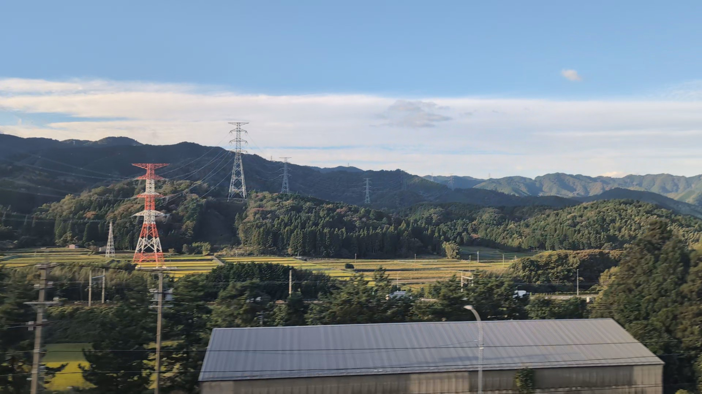
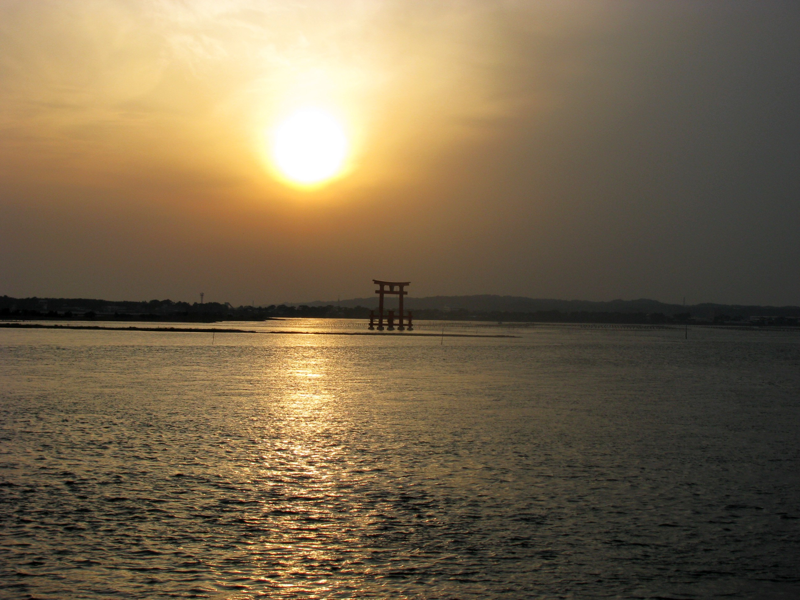
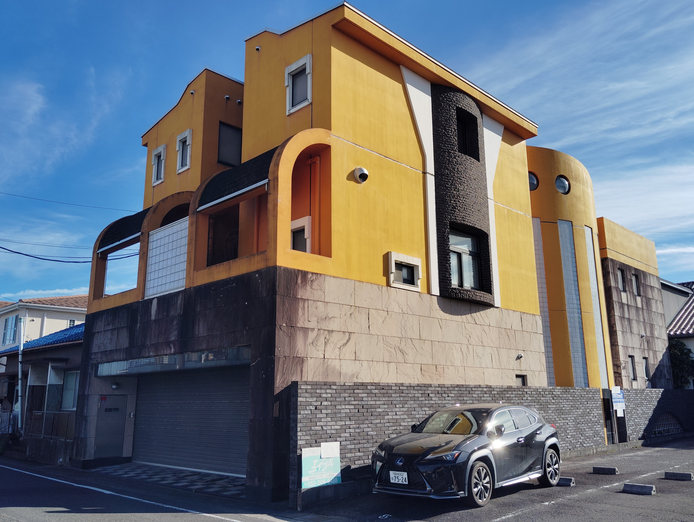
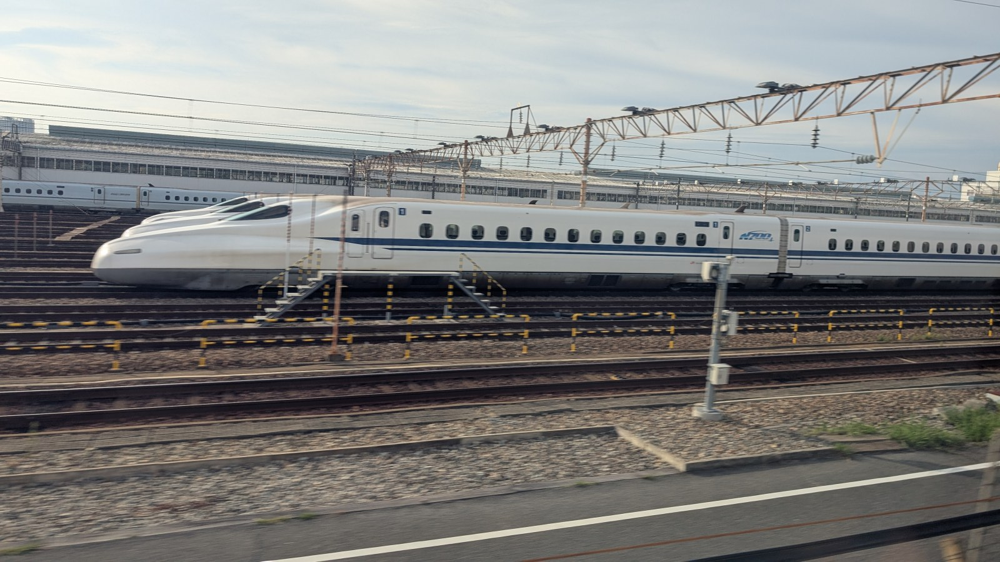

電影場景與城市散步
東京的哥吉拉：從街頭到車窗
在新宿抬頭、在日比谷遇見另一個身影，再尋找Shin Godzilla裡的河川。
步行走訪新宿、日比谷；在品川至新橫濱之間看多摩川。
閱讀哥吉拉的故事 Kakidai / CC BY-SA 4.0從電影、影集與漫畫，走進日本的土地
熟悉的故事，不同的日本風景。
看看窗外的列車與風景，認識故事發生的地方。邀你在下一趟旅程中稍作停留，發現日本另一種迷人之處。
電影場景與城市散步
在新宿抬頭、在日比谷遇見另一個身影，再尋找Shin Godzilla裡的河川。
步行走訪新宿、日比谷；在品川至新橫濱之間看多摩川。
閱讀哥吉拉的故事 Kakidai / CC BY-SA 4.0
從虛構故事走向歷史
從虎永到德川家康，認識東京往京都途中一段風景背後的歷史。
新幹線岐阜羽島至米原之間；步行探索可從JR關原站出發。
閱讀SHŌGUN的故事 2026年11月 / michikusa
作品中出現的地方
弁天島的夕陽、水邊的車站，把凜的旅程變成自己的停留。
濱松至豐橋之間看湖景；順路探訪弁天島、佐久米及舘山寺。
閱讀搖曳露營△的故事 Aimaimyi / CC BY-SA 3.0
作者生活的家鄉
每天與東京編輯通電話，以航空運送原稿，認識七龍珠作者在家鄉的生活與創作。
名古屋旁的城鎮，也是清洲城掠過窗外時，可以想起的一段連結。
閱讀七龍珠的故事 Asturio Cantabrio · 2025年11月 · 未加工 · CC BY-SA 4.0
以真實新幹線為原型的機器人與鐵道博物館
從N700A與N700S的差異，到由0系變形的Shouki，再走訪名古屋、京都的鐵道博物館。沿途認識故事與真實列車的連結。
名古屋站搭青波線至金城埠頭站，參觀磁浮・鐵道館；京都站搭嵯峨野線至梅小路京都西站，參觀京都鐵道博物館。
閱讀新幹線變形機器人的故事 2026年7月12日 · michikusa閱讀・觀看・漫步
你可以下車走訪故事裡的地方，也可以在風景經過時想起它。無論哪一種，旅程的樂趣都不只在抵達。
尋找沿途的窗景 →